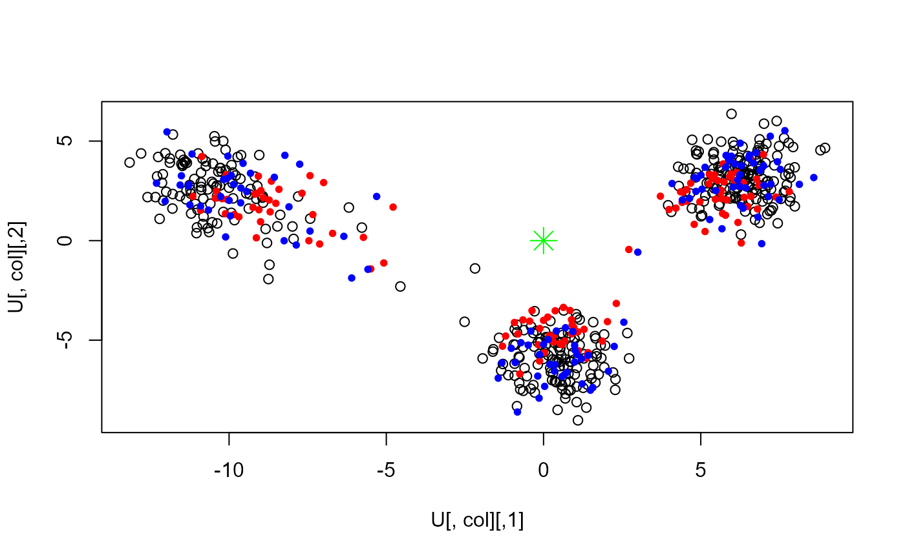

Online Augmentation, Decomposition, and Procrustes (OADP) projection of
PC loadings onto some study data X.
pca_OADP_proj(X, loadings, sval) pca_OADP_proj2(XV, X_norm, sval)
| X | Data to get PC loadings into. |
|---|---|
| loadings | PC loadings of the reference PCA to project. |
| sval | Singular values of the reference PCA (sqrt of the eigen values).
Only the |
| XV |
|
| X_norm | Vector of sums of squared rows (e.g. |
pca_OADP_proj(): A list with the simple projection X %*% loadings
and the projection based on OADP.
pca_OADP_proj2(): The projection based on OADP only
(a matrix of same size of XV).
X <- readRDS(system.file("testdata", "three-pops.rds", package = "bigutilsr")) N <- 400; M <- ncol(X) ind <- sample(nrow(X), N) # Compute SVD using one part of samples svd <- svds(X[ind, ], k = 5) U <- sweep(svd$u, 2, svd$d, '*') col <- 2:3 plot(U[, col])# Projecting other samples proj <- pca_OADP_proj(X = X[-ind, ], loadings = svd$v, sval = svd$d) points(proj$simple_proj[, col], col = "red", pch = 20) # shrunk towards 0